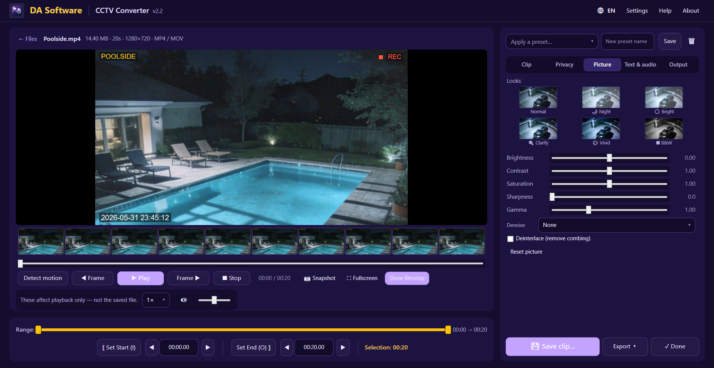
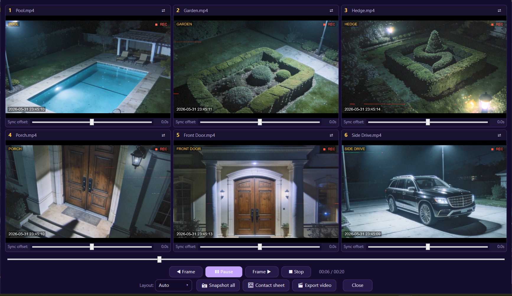
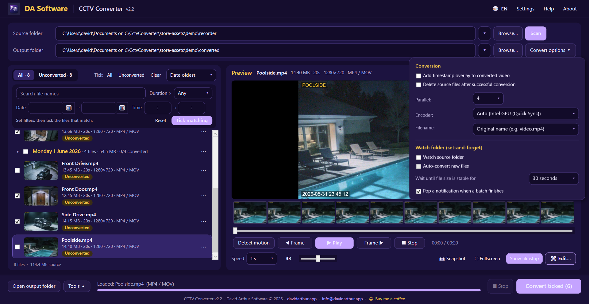

CCTV Converter Features
From a card full of unplayable files to reviewed, edited, shareable footage — all on your own PC.
From a card full of unplayable files to reviewed, edited, shareable footage — all on your own PC.

Point it at your DVR's card, narrow down by date, time of day or filename, and batch-convert to MP4 — with instant preview, a thumbnail filmstrip and, after a motion scan, a motion heatmap along the seek bar.

Trim to the exact frame, crop and rotate, rescue dark footage with brightness, contrast, saturation, sharpness and gamma, and hide faces, number plates or any moving area for privacy. Set the output size and quality, save presets, and export — your originals are never touched.

Play up to six angles side by side on a single timeline, nudge each camera's offset to line up clocks that drifted, then snapshot every view at once or export a synchronized composite.

Pick your encoder (including GPU acceleration on NVIDIA, Intel or AMD), choose how output files are named, and switch on a hands-off watch-folder that converts new recordings automatically as they land.
Magic-byte detection identifies Xiongmai, Dahua, Hikvision, raw H.264/H.265 streams and 20+ file types in all, automatically — no guessing required.
Stream-copy where possible (no re-encoding) means a 30-second clip converts in well under a second with zero quality loss. Falls back to a clean H.264 re-encode if needed.
Convert several files at once on multi-core machines, so a full day of recordings finishes far sooner. Adjustable from 1 to 16 concurrent jobs.
Optional clock overlay burned right into the converted MP4 — useful when the date and time need to be visible in the video itself.
Full UI in English, Indonesian, Vietnamese, Thai, Filipino, Chinese (Simplified), Japanese, Korean, Spanish, Portuguese, French, German, Russian, Turkish, Ukrainian and Arabic (right-to-left). Auto-detects your Windows language; switch any time with one click.
Hide clips below 10 / 20 / 30 / 45 seconds or 1 to 5 minutes. Filter by date, time of day or filename. Folders without matches collapse out of the way automatically.
Play, pause, frame-by-frame stepping, variable speed (0.5×–8×), volume control, and a fullscreen mode with draggable controls so you can see what's underneath.
Capture any frame as JPEG or PNG — perfect for sharing a moment without the whole clip.
Stitch a day's clips, or any selection across multiple folders, into one continuous video in chronological order. Useful when you need to pass a whole day's footage to someone else.
Export the full file list with filename, size, duration, resolution, format and timestamps — handy for cataloguing your footage.
Drag a folder or video files onto the window to scan them. Your recent source and output folders are remembered between sessions.
Stop a long scan or batch conversion at any moment. Partial files are cleaned up automatically so nothing's left in a bad state.
Tick "Delete source files after successful conversion" to reclaim SD-card or drive space as you go — with confirmation.
Blur, pixelate or black out faces before you share a clip — the editor puts a box over each face and keeps it there as the face moves. Need to hide something else? Draw a box over a number plate, a screen or any other area and Track this area keeps it covered through the clip. It all runs on your PC — nothing is ever uploaded. Always check the result before you share a clip. The tool only hides: it does not recognise or identify anyone, and it makes no decisions about people.
Instant look presets — Night, Bright, Clarify, Vivid and Black & White — each shown as a thumbnail so you can preview the result. Fine-tune with brightness, contrast, saturation, sharpness and a new gamma control, all with a live preview.
Detect motion right in the editor to mark every active stretch as a segment, then jump straight between events — skip the empty hours without leaving the clip you're working on.
Shrink a clip to email it, save a moment as an animated GIF, or generate a file integrity report with source details and SHA-256 checksums, so a copy can be checked against the original — it opens in any browser and can be printed to PDF.
Right-click a day of recordings (or use the Tools menu) and play the whole day as one seamless video. Scrub across the joins between files, jump to the next motion, and export any span without opening each file.
Smooth the combing on older analogue cameras, and burn a reference number or watermark into an exported copy.
No accounts, no ads.
Installed and updated by the Microsoft Store